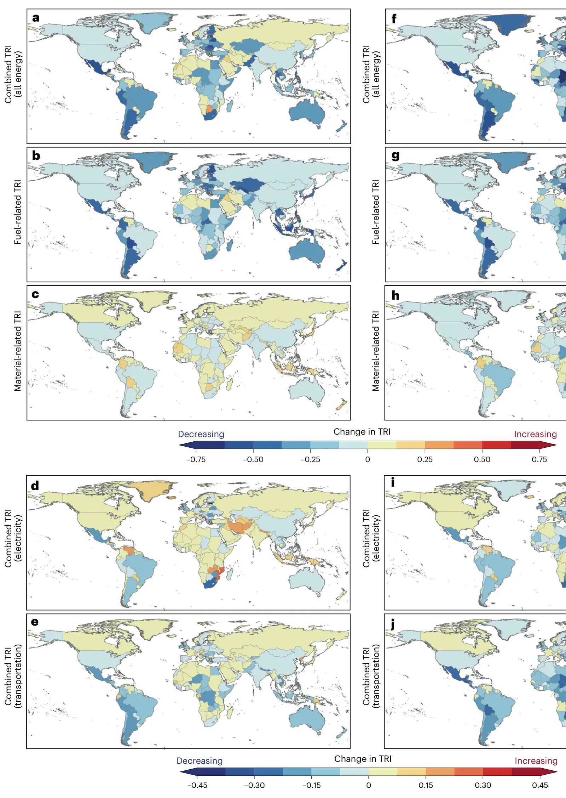

Trade risks to energy security in net-zero emissions energy scenarios
Key finding. In net-zero scenarios, overall trade risks fall in 70% of countries because they buy less imported fossil fuel — but trade risks to either the electricity or the transport system rise in 82% of the countries that become more dependent on imported materials.

What question did this research address?
Energy security is usually discussed as a fossil fuel problem — who has oil and gas, who has to buy it, and how exposed the buyers are. A country is more secure when it imports less, when its imports come from many sources, and when those sources are reliable.
A net-zero energy system changes what gets traded rather than ending trade. Fuels give way to critical materials for batteries, turbines and transmission. This paper asked whether that substitution leaves countries more secure or less, and which countries move which way.
What did we find?
The two results are not in tension; they are about different exposures. Aggregate risk falls because fossil fuel imports dominate today's trade, while sector-specific risk rises because electricity and transport come to depend on a narrower set of mined and refined materials.
Resource endowment decides the direction. Countries with large mineral reserves — Australia and China among them — become markedly less import-dependent. Countries whose leverage came from fossil reserves, such as Russia and states in the Middle East, move the other way.
The result is sensitive to things that can be changed. The analysis tests differences in trading networks, in energy system configuration, in how material-intensive each technology is, and in recycling rates, and each of those shifts the risk picture.
That sensitivity is the opening the authors point to: material intensity and recycling are engineering and policy variables, so a country's exposure under net zero is not fixed by geology in the way fossil dependence largely was.
Why does it matter?
It corrects a common framing in both directions. Decarbonization is often sold as straightforwardly good for energy security, and separately feared as trading oil dependence for lithium dependence. Both are partly right, and which applies depends on the country and on which system you look at.
Because the risk concentrates in electricity and transport rather than in the aggregate, a national energy security assessment that reports only a headline number will miss the exposure that actually matters under net zero.
It also redraws the geopolitical map. The countries that gain from the transition are not the ones that hold hydrocarbons, and the ones that lose leverage are precisely today's fossil exporters — a redistribution of strategic position, not its removal.
Citation
Jing Cheng, Dan Tong, Hongyan Zhao, Ruochong Xu, Yue Qin, Qiang Zhang, Karan Bhuwalka, Ken Caldeira, and Steven J. Davis (2025). Trade risks to energy security in net-zero emissions energy scenarios. Nature Climate Change 15, 505-513.
Related
- What would it take for the energy system to stop changing the climate?
- Committed emissions from existing energy infrastructure jeopardize 1.5 °C climate target (Tong et al., 2019)
- The supply chain of CO2 emissions (Davis et al., 2011)
- Net-zero emissions energy systems (Davis et al., 2018)